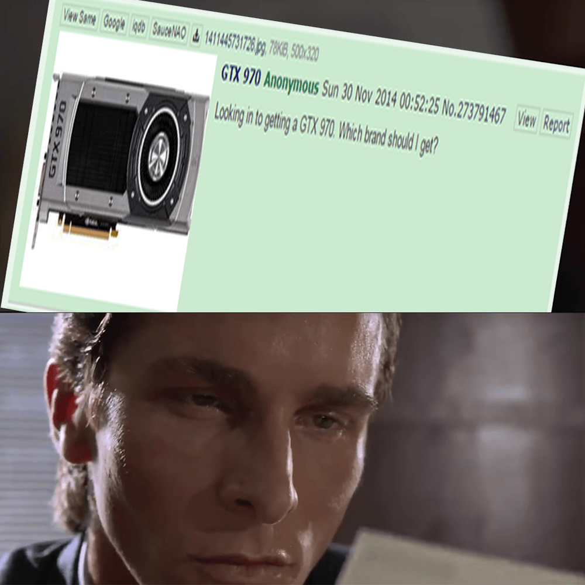
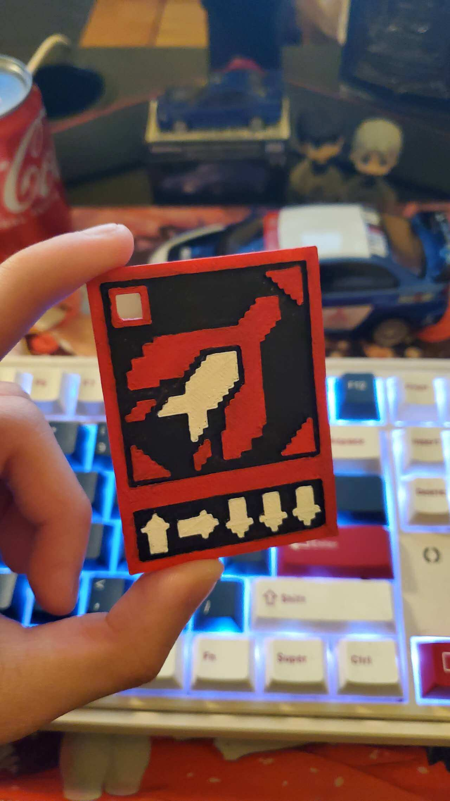
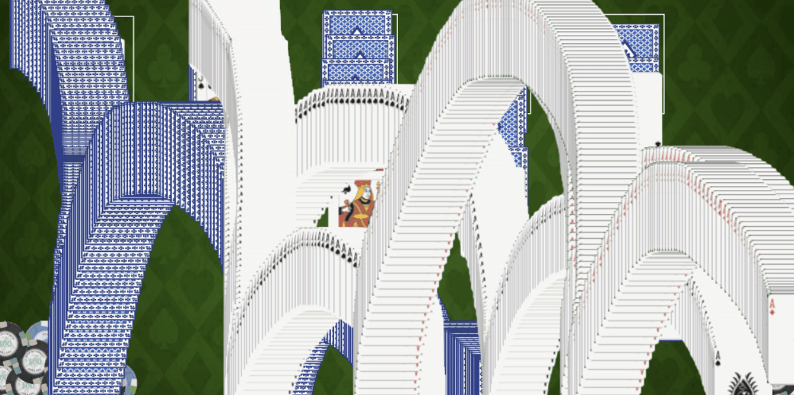

❯❯❯❯ About me
I don't consider myself a true artist. I'm just someone who likes to create things and elements that I usually pay attention to and enjoy. These can be meaningless or meaningful, and it all depends on the thoughts of the people who view my works. Through painting, photography, video, 3D modeling, and so on, I want to create the things I like through these mediums or by learning new mediums and technologies. In the current art practice, I am still constantly discovering my visual language, learning more techniques and practicing.
My stuff

Glitch
The pictures above are from the military parades of East Germany and North Korea, as well as the Soviet Union. The first one uses the Text Editor, the second uses Audacity, and the third uses a combination of the two. The reason why I chose these images is that I personally like this communist art culture, And the use of glitch art can add to this "mysterious" atmosphere even more.


Meme mashup
I used one of the clips from American Psycho and the controversial meme from the GTX970 to tie it together. *Patrick Bateman thinks this user has a "good taste" in his choice of graphics cards.


3d print
I used plug-ins to become a 3D model and print it, and and I also manually colored this model inspired by helldiver2, and I also made it into the shape of a key chain.


Poker night
My image is an attempt to draw a "Spider Solitaire" victory picture similar to the one that comes with the Windows 7 system. The thing I made was inspired by Spider Solitaire.
Contanct Me
xxxxxxxxxxxxx